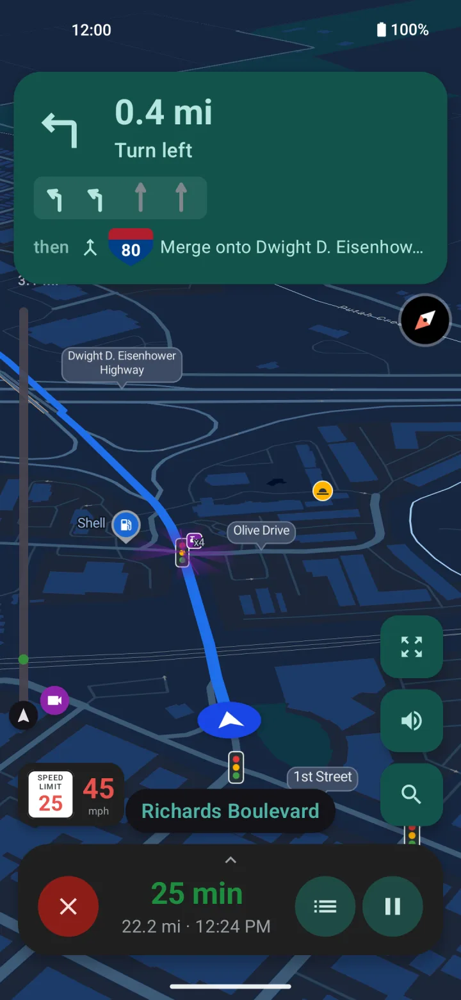
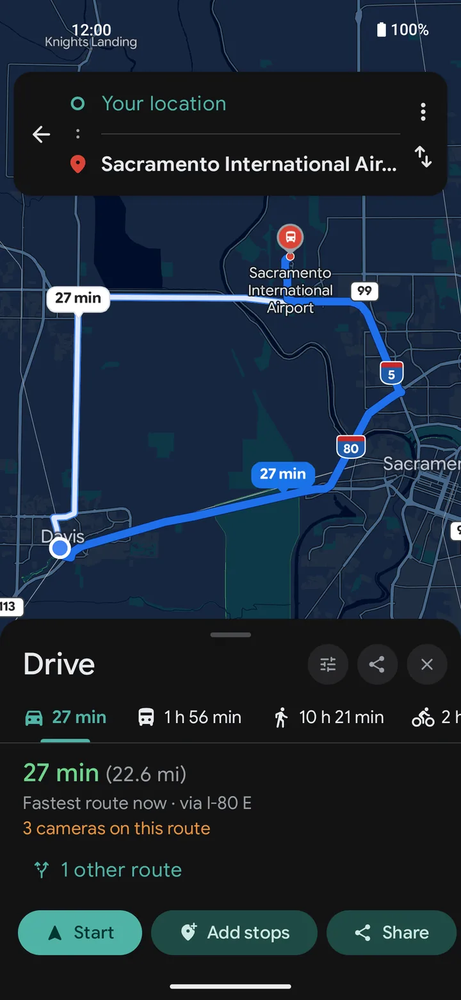

The best of OpenStreetMap and Google Maps, in one app.
Vela is a free, open-source Google Maps alternative for Android. The map is open data. Live traffic, hours and reviews come from Google when you ask, with no Google account, no Play Services and no Google code on your phone.
Built for degoogled phones such as GrapheneOS, and it runs on stock Android too. Android 8 and up.


It looks like Google Maps. That is the point.
You already know how to use it. Underneath, almost none of it is Google: it is a native Android app drawing open map tiles, with no Google SDK and nothing to sign in to.
It is not a wrapper around the Google Maps website and it is not a modified copy of the Google Maps app.





Why this exists
I made Vela to solve my own problem. I run GrapheneOS, and Google Maps stopped working for me without Google's services on the phone. I need traffic, and a handful of other things that pretty much only Google does well. I tried every maps app under the sun and none of them fit.
So I built one. The map is OpenStreetMap and other open data. When you search, tap a place or ask for a route, your phone asks Google the way a logged-out browser would, as anonymously as it can, and shows you the answer. No account, no API key, no server of mine in the middle. It is what NewPipe is to YouTube, for maps.
It looks like Google Maps on purpose. I think that interface is the best there is, and muscle memory matters when you are driving. I needed this to just work.
It is in beta and I am one person, so it has bugs. I build it with heavy use of AI assistants and test it on real phones. It is GPLv3 so it can outlive me, and I will never charge money for it.
PimpinPumpkin, developer of Vela
What it does
Traffic that is real
Arrival times use the same live traffic Google Maps shows, and each route says light, moderate or heavy in plain words.
Places you can trust
Hours, ratings, reviews and photos for the place you tapped, looked up fresh when you ask.
Works with no signal
Download a state or a country once. The map, search, routing and navigation keep working offline.
Transit that is live
Departure boards and stop-by-stop timelines, from open transit data where it exists.
Plate cameras on the map
Flock and other license-plate readers from the community DeFlock project, plus fixed speed cameras, on the map and along your route.
A voice that stays on the phone
Spoken directions come from a neural voice that runs entirely on the device. Voice search works offline too.
Street View, gas prices, parking
Look around a street before you get there, see fuel prices in search results, and tap P to remember where you parked.
The rest
Saved lists (and importing a shared Google Maps list), 19 languages, light and dark, and full keypad control for dumbphones.
What Google sees
This is the question everybody asks first, so here is the whole answer. With the default settings:
| When you | Google gets |
|---|---|
| Pan and zoom the map | Nothing. Tiles come from OpenFreeMap, streets and labels from OpenStreetMap, and the places on the map from open data built in Vela's own repository. |
| Type a search | Your text, anonymously, the way a logged-out browser sends it. |
| Tap a place | An anonymous lookup of that one place. That is where the hours, reviews and photos come from. |
| Ask for directions | Where the trip starts and ends, anonymously. A driving route comes from Google so it knows about traffic and closed roads. Walking asks Google once. Cycling uses open routers, and offline the route is worked out on the phone. |
| Drive with navigation on | A traffic check from your current position every couple of minutes, so the arrival time stays right. You can turn that off. |
| Save a place, build a list | Nothing, ever. Saved places, history and settings stay on the phone. |
Google sees an IP address and a question. It does not see an account, a device ID or an app key, because there are none. Vela also throws away Google's logged-out cookie every week by default.
Want none of it? One switch, Settings → Privacy → Use Vela without Google, and no request goes to a Google server at all. With a downloaded region the app works fully offline.
The privacy page lists every service Vela contacts and what each one receives.
The honest part
Vela is in beta. Things break. If you need a maps app you can bet a road trip on, keep a second one installed.
- Google can move things. When Google changes a page, search or place details can stop working. The fix usually reaches your phone on its own, without an app update, but there can be a gap.
- Open place data has ghosts. Some businesses on the map closed years ago. Tapping one checks it against Google, and the data gets cleaned with every build.
- It is not on Google Play, and it is not in the main F-Droid catalog. You install it from GitHub, Obtainium or Vela's own F-Droid repository.
- Some things cannot be built. Police reports, crash reports and anything else that needs a Google account or a server of mine. The list is written down.
- One person maintains it. Feature requests get read. They do not get voted on.
Install
Free, no account, no ads. Pick whichever you already use.
Obtainium
Follows the weekly stable release and updates it for you. The easiest way if you already have Obtainium.
Add to Obtainium →F-Droid
Vela runs its own repository. Add it to any F-Droid client and you get the same signed builds.
Repository address and setup →Plain APK
Download the file from the releases page. The app checks for updates itself after that.
Latest stable release →Check that you got the real thing
Every Vela build, on every channel, is signed with one key. Its SHA-256 certificate fingerprint is below. Android also refuses any update signed with a different key.
29:93:8B:48:58:06:3E:42:E6:77:FF:95:C9:01:CD:48:24:8A:7F:03:2A:3A:E8:5F:9B:9E:56:17:56:8B:0D:36
Every answer, written down
Vela is documented in the open, from "why is this shop missing" to the format of every request.
Questions and answers
What each part of the app uses, what works without Google, why a place is missing.
Privacy
Every service Vela contacts, when, and what it receives.
The Vela book
How each part works, in plain language: places, routing, navigation, offline, transit.
Technical specification
Every rule, constant and threshold, for people reading or changing the code.
Features
One line for each thing the app does.
Roadmap
What is open, what is next, and what will not be built.
Found a bug? Want to help?
- Bugs go on GitHub, through the report form. It asks for the version and the steps, which is what it takes to fix anything. Reports left on forums get lost.
- Translate it. Vela speaks 19 languages and translations happen in the browser on Weblate.
- Build it yourself. The build guide says where every piece comes from.
- Buy me a coffee. Vela costs nothing and has no ads. If it saved you from reinstalling Google Maps, this is the tip jar.
Writing about Vela? The press page has the facts, the screenshots and the things people usually get wrong.